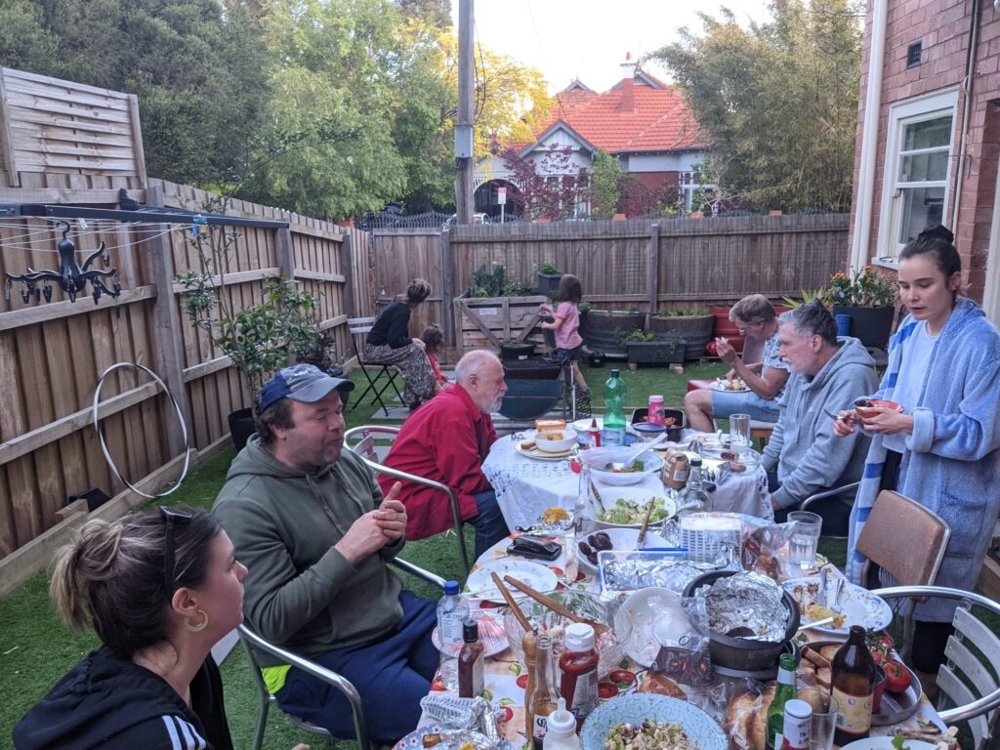

David Tiley was one of the early generation of bloggers in Australia, starting in 2003, approximately the same time as I started. I first met him at a blogging meet-up in St Kilda (where David lived) in about 2005. Blogging was much more social in those days, and there were frequent meet-ups of the more enthusiastic bloggers.

David, me, Jessica and others at a bbq in Church Square before he became too ill to venture outsideHowever I didn't really get to know David until 2013. I spent the whole of that year living in St Kilda, where I attempted to set up a private legal practice so that I could flee Darwin, whose steamy tropical climate I was finding increasingly burdensome. I rented a flat in Park Street, St Kilda West and had an office in Collins Street in the CBD.
One morning towards the end of 2013 I walked out of my flat to catch a tram into the city. Who should I bump into but David Tiley?! It turned out he lived right next door to me in a beautiful old block of apartments called Chelmer Lodge. We started hanging out together several times per week and David became a very close friend.
Although David had lived in his apartment for many years, he was only renting and in early 2014 the owners booted him out so that they could renovate the block. David and I decided to rent a place together, and soon found a much less stylish but perfectly adequate unit on the other side of the street.
By this time I had decided to return to Darwin and recommence teaching and research at Charles Darwin University. I kept the legal practice in Melbourne going on a part-time basis, commuting frequently between Darwin and Melbourne, although the practice was dubiously viable because I simply had no contacts in Melbourne. I had lots more contacts and therefore clients in Darwin, and therefore commuting between the two cities was a good idea, if very tiring. Most of the flights to and from Darwin are "redeye" specials, leaving and departing in the middle of the night.
When in Melbourne, of course I stayed at the apartment we had rented. We negotiated a congenial arrangement where I only paid rent for the time I was actually in occupation of the unit. Generally I was in Melbourne around two months per year, usually along with my wife Jenny McCulloch. This arrangement with David continued until late 2019 when the whole of my family moved to Melbourne so that Jenny could undertake clinical trials for her ovarian cancer at the Peter MacCallum Cancer Centre.
David was always congenial company. He was a great storyteller on a huge range of topics, and could keep you entertained for hours. He was also a great cook, in the rich and hearty cuisine tradition popularised by the English celebrity chefs Two Fat Ladies.
When we moved to Melbourne permanently we cancelled the arrangement with David and found another apartment to rent at the top of the hill in St Kilda in Church Square. The whole family lived there: me, Jenny and her daughter (my step-daughter) Jessica. In 2021 David terminated his lease at Park Street and moved into an apartment in the same building as us in Church Square.
But David wasn't just a blogger, great cook and congenial host. He enjoyed a long, fascinating and productive life. David was born in July 1950 at Portsmouth in England. When he was five years old his family decamped to Australia, living first in Perth and then moving to Darwin. David spent most of his primary school years attending Parap Primary School.
David as a young man
His family then moved to Adelaide, where he spent his high school years and then completed an Arts degree and teaching qualification at Flinders University. He taught high school English in Adelaide and then at Ceduna High School. However he rapidly came to the conclusion that teaching was not for him. He started making documentary movies and was even a researcher on Storm Boy, featuring David Gulpilil's first starring role in a long and distinguished acting career.
David was also employed by the South Australian Film Corporation for a while, but then decided to undertake international travel, spending most of his time in England. Apparently he made several documentaries there, and also moonlighted as a hippie hobby farmer. He returned to Australia in 1989, first living at Brunswick in Melbourne. Then in about 1991 he moved to St Kilda where he lived at Chelmer Lodge from that time until 2014. He never married or had children, but was in a long relationship with a woman named Susie, with whom he bought a house at Wye River on the Great Ocean Road. Unfortunately Susie developed schizophrenia and began doing very strange things with their joint funds, which resulted in the house having to be sold. Eventually she was committed to a mental institution in Adelaide where she remains to this day.
David still made the occasional documentary after he returned to Australia, but most of his time was spent as editor of ScreenHub, the movie division of a group of arts industry online journals called ArtsHub. These journals focus on the business aspects of the arts industry. David was editor and principal author of ScreenHub for 18 years, eventually retiring in 2021. In 2022 he received the Stanley Hawes Award at the Australian International Documentary Conference.
In the meantime, in 2016 David was diagnosed with pulmonary fibrosis. This is a degenerative disease where the lungs become progressively more and more scarred and breathing more and more difficult. David had always been very fit, riding his bike every day to and from work at the ArtsHub Headquarters in North Melbourne. The pulmonary fibrosis put an end to that, and was one of the main reasons for his retirement in 2021. David still battled along after that, but then also developed lung cancer in late 2023 even though he had never smoked. He was confined to his flat in Church Square, and then in about February 2024 was admitted to the Bethlehem Hospice at the Calvary Hospital in Caulfield South. He never came out and died on 22 April 2024. David was still as social as ever, holding court with friends both in person and by telephone. However, in his last fortnight of life he was semi-conscious at best.
David's wake was held a couple of months later at the Memo Club in St Kilda where more than a hundred people attended. As the invitation put it: " David was a man of words, he danced and played with them, filled himself up with them and eagerly shared them with his friends. He was addicted to books (and DVDs for that matter of which he had a huge collection) and consumed them with passion."
Anyway, I have rabbitted on for quite long enough. I will end this piece with a quite long quote from the ArtsHub CEO George Dunford published at the time of David's retirement in 2021:
David came to ScreenHub after writing his much-loved pioneering blog Barista: Heartstarters for the Hungry Mind. The blog gave him the perfect place for his great intellectual curiosity to thrive. His blog categories alone show off this curiosity as they ramble from ‘Austrapolitics’ to ‘New Orleans’ to ‘intellectual property’ to (by far the biggest category) ‘strangely compelling’. Here you’ll find Tiley headlines like As the world grows more boring (reflecting on a small publisher closing) and Die, swinish symbol of capitalism, die and spew money from your blasted guts. This turns out to roll together two stories looking at ATM robberies in Japan and South Africa, but David makes connections and forms stories where others don’t.
His blog categories alone show off this curiosity as they ramble from ‘Austrapolitics’ to ‘New Orleans’ to ‘intellectual property’ to (by far the biggest category) ‘strangely compelling’.
In 2005 David joined ScreenHub, a film and TV website run by John Paxinos and Alex Prior. In a farewell video to David, Alex Prior said that they got not just a great editor but a lifelong friend. ScreenHub was bought up by ArtsHub’s parent company Vertical Networks Group in 2012 and David moved to the Guildford Lane offices where he wrote many, many stories.
In 2009, I first met David as the great script Svengali of documentary film. I’d co-authored a book about self-proclaimed micronations, in a satirical guidebook. We were introduced to a quiet man with a gleam in his eye who spoke softly about how we could shape a TV series out of this book. It was that gleam that surveyed the whole book and again found those patterns which became a series outline to apply for funding. It is one of hundreds of film projects that David has pushed along stretching back to his job at the Australian Film Commission in 1996.
Of course the project never got up, so the next time I met David was in 2019 when he was the cornerstone of ScreenHub. His vision for ScreenHub was of a no-bullshit publication that spoke out when others in the screen industry wouldn’t. He digs a good story out of any rabbit-hole – evidenced by his recent Hail Draconis article.
David’s insatiable curiosity often pushed up against deadlines, or perhaps stretched them to breaking point. The only way to get ScreenHub’s newsletters out by 4pm is to start asking David about it in the morning and then come back at 2 to see how is going. And knowing that when you check in again at 3 David is likely to be deep down a rabbit-hole smuggling the bunnies gin and Marxist theory. He is courageous and his charging at windmills yields unexpected and wonderful quirky stories.
When David told us he was leaving he wanted to stress that this was only leaving his staff role not leaving ScreenHub altogether. In David’s words in his farewell article: ‘Nothing endures except principles. Everything else is ephemeral.’ But Einstein’s law of the conservation of energy states that energy never dies; it just changes forms. So we’re hoping to keep David’s curious energy with ScreenHub alive – ideally writing his weekly box office wraps that tease out those trends from the trash. There is also talk of a book project and a few other passions that David will pick up.
In trying to capture David, any writer knows they will fall short of that ‘quality of light, the tone, the habit and the dream’ that he brings to what he does. I’m tempted to reach for Sergei Eisenstein who said, ‘Even in a less exaggerated description, any verbal account of a person is bound to find itself employing an assortment of waterfalls, lightning rods, landscapes, birds, etc.’ But David is more than a lightning rod for talent or a thundering waterfall of words. So I’m going to imagine him looking out of an editorial meeting at something we can’t see. Maybe focussing his keen eye, lowering his visor and training his journalistic lance on that distant target before digging in the stirrups.
Charge on, ScreenHub’s rascal-at-large.